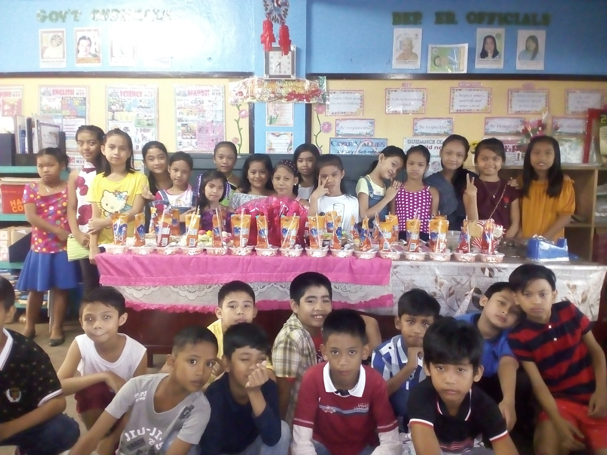
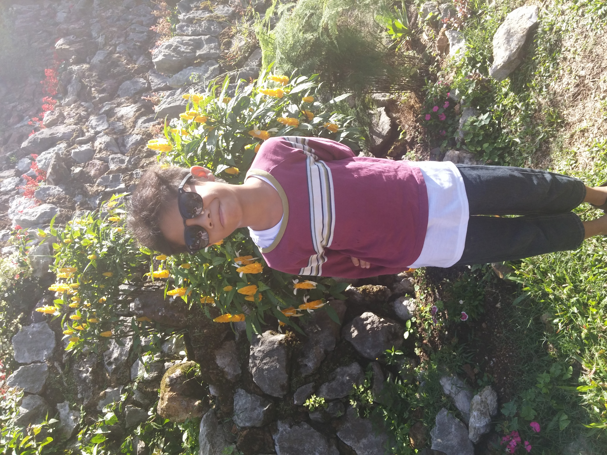
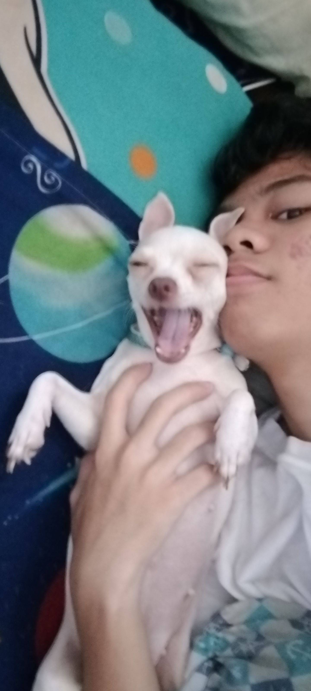
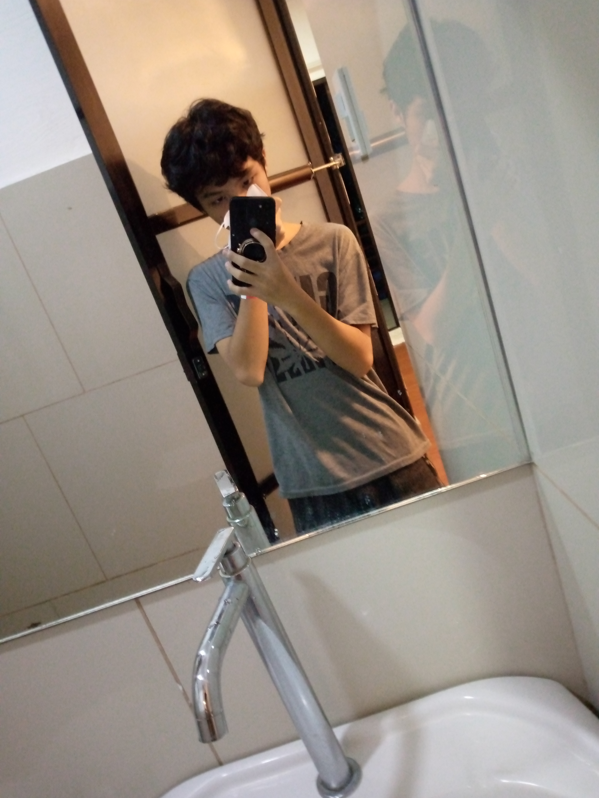

This was me as a young child, a time when my world revolved around simple joys and carefree moments. I knew little beyond the excitement of playing video games such as Super Mario, Guitar Hero, and Crash Bandicoot, among others. During those early years, I developed a deep appreciation for gaming, which brought me immense happiness and served as a constant source of entertainment and comfort.
This photograph was taken during our Christmas party when we were Grade 5 elementary students in Bulacan. It captures a time filled with joy, laughter, and meaningful connections with my classmates. This moment remains one of the most cherished memories of my childhood, as it reflects the happiness and unforgettable experiences we shared together during that special occasion.


This was my first visit to Baguio back in 2016, a memorable experience that lasted for about a week. During that time, I created many meaningful and joyful memories that I continue to cherish. It was also where I first experienced the cool climate that Baguio is known for, which made the trip even more special. Throughout my stay, I had the opportunity to explore and discover some of the beautiful places the city has to offer, making it an unforgettable chapter of my life.
This is a photo of me playing with my dog, Licksie. Although we have two other dogs at home, she is my favorite because of her gentle and affectionate nature. Her sweetness and charm make her especially dear to me, which is why I chose to capture this moment. This picture reflects not only our bond but also the joy she brings into my life.


This marks my final day of recovery after having been diagnosed with dengue fever approximately for over two weeks. Over the past fourteen days, I have undergone a period of rest and treatment, and I am grateful to have reached this stage of recovery.
This marks my younger sister's debut, a truly significant milestone in her life. It stands as one of the most memorable moments I have experienced with her, filled with pride, joy, and heartfelt celebration.